Entangled Units Formalism
AUTHOR David Dahlbom (dahlbomda@ornl.gov), DATE: January 21, 2025
Traditional "large-S" classical methods start by modeling a spin system as a set of two-level quantum systems (dipoles) on each site of a lattice. This is the so-called product state assumption. In classical dynamics, these different two-level systems interact with each other, but they are never entangled. The classical dynamics evolves these product states into other product states, meaning that one can always think about the state of a system as a set of individual spins (dipoles or, equivalently, two-level quantum systems) existing on each site of the lattice.
The SU(N) formalism extends this picture in a straightforward way. Instead of having a two-level system on each site, one has an N-level system. The product state assumption remains. This allows the local behavior to be richer than that of a simple dipole. These local N-level systems interact with each other in the classical picture, but they are never entangled. The treatment of each individual N-level system is quantum mechanical, however. Thus, if one puts two-spins inside each one of these sites, the entanglement between the two spins will be faithfully represented and evolved.
This tutorial gives a simple illustration of this idea using Sunny's entangled unit formalism. The first model we will consider is the the strong-rung S=1/2 ladder.
Making an EntangledSystem for the Heisenberg spin ladder
The approach to modeling systems with localized entangled is to first build a System in the standard way, with an individual spin on each site. Interactions are specified as usual. Note that this system must be built in :SUN mode, even when S=1/2. Another important restriction is that any group of spins which one wishes to entangle must lie entirely within a crystalographic unit cell. This may require reshaping from the conventional unit cell or displacing the atoms from their standard positions within the unit cell. We plan to automate this step in later versions. The spin ladder presents no difficulties in this regard.
Specify a the crystal.
using Sunny, LinearAlgebra, GLMakie
latvecs = lattice_vectors(1, 1, 2, 90, 90, 90)
positions = [[0, 0, 0], [0, 1/2 - 1e-4, 0]]
crystal = Crystal(latvecs, positions)
view_crystal(crystal)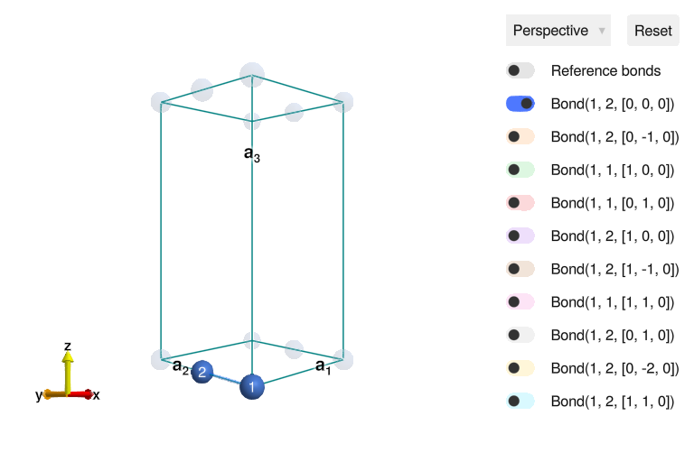
To model a quasi-1D system, symmetry must be broken along the b-axis by making bonds 1 -> 2 and 2 -> 1 inequivalent. This was achieved by offsetting the position of the second atom slightly from [0, 0.5, 0].
Specify a system and the two exchange interactions, J (rungs) and J′ (lengthwise bonds).
J = 1
J′ = 0.2J
sys = System(crystal, [1 => Moment(s=1/2, g=2)], :SUN; dims=(2, 1, 1))
set_exchange!(sys, J, Bond(1, 2, [0, 0, 0]))
set_exchange!(sys, J′, Bond(1, 1, [1, 0, 0]));This completes specification of the model without consideration for entanglement between the sites bonded by rungs. Examine a ground state of this system.
randomize_spins!(sys)
minimize_energy!(sys)
plot_spins(sys)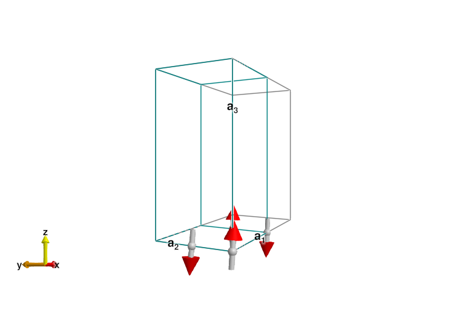
Spin Wave Calculations
The last result is the expected classical ordering, with full-length dipoles arranged antiferromagnetically. This results in a q=(π,π) ordering. Because this model is Heisenberg, the Hamiltonian has an SU(2) symmetry, and any such ground state breaks this symmetry. This will lead to a Goldstone mode, as can readily be seen when we calculate the excitations with spin wave theory.
swt = SpinWaveTheory(sys; measure=ssf_trace(sys))
qs = q_space_path(crystal, [[0, 1, 0], [1/2, 1, 0], [1, 1, 0]], 200)
energies = range(0, 2.5, 200)
res = intensities(swt, qs; energies, kernel=gaussian(; fwhm=0.2))
plot_intensities(res)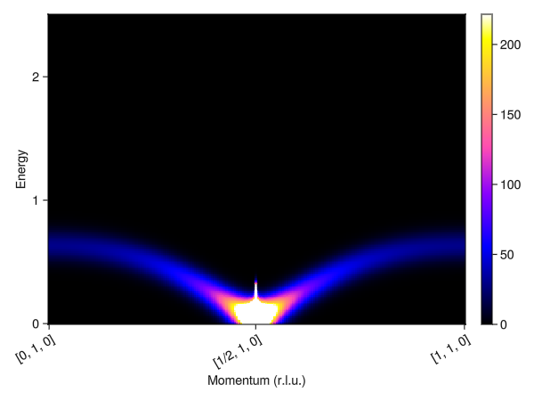
This result is incorrect for such a small J′. Instead, the ground state on each bond should be a singlet, i.e. non-magnetic. Correspondingly, the excitations should be gapped singlet-triplet excitations. This can be reproduced using the entangled units formalism. An EntangledSystem is constructed from an ordinary System by providing a list of sites "to entangle" within each unit cell.
esys = Sunny.EntangledSystem(sys, [(1, 2)])
randomize_spins!(esys)
minimize_energy!(esys)
plot_spins(esys)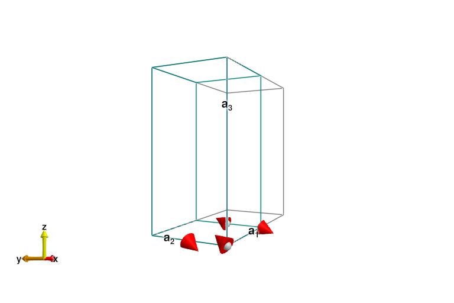
The ground state here is a pair of singlets, and the magnitude of the dipoles on each site is zero (up to numerical precision). The ordering wave vector is now q=0, so the system should be reshaped into the magnetic unit cell (one bond) before performing spin wave calculations.
esys = reshape_supercell(esys, I(3))
plot_spins(esys)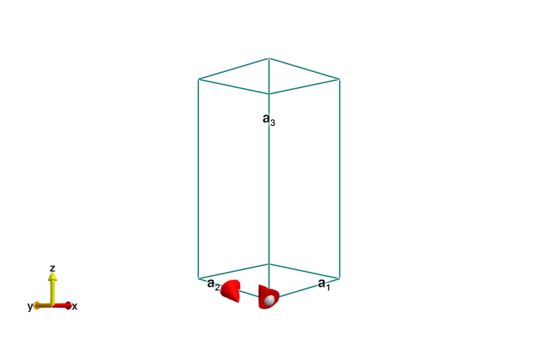
Next create a SpinWaveTheory and calculate intensities just as would be done for an ordinary Sunny System.
eswt = SpinWaveTheory(esys; measure=ssf_trace(esys))
res = intensities(eswt, qs; energies, kernel=gaussian(; fwhm=0.2))
plot_intensities(res)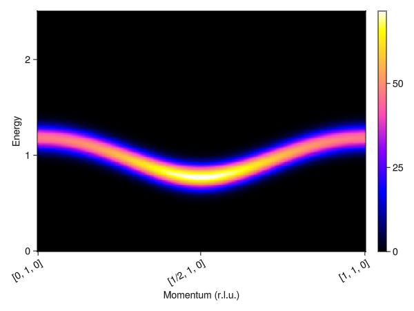
This produces the expected gapped, triplon mode. Note that this mode is only visible when looking at the antisymmetric channel. Since we placed our second atom at a position of 1/2 along the b-axis, the excitations are visible along [H, 1, 0].
Finite-T Classical Calculations
As with ordinary Systemss, excitations may also be calculated at finite temperature using classical dynamics using the SU(N) generalization of the Landau-Lifshitz equations. Now we need to construct a system with enough sites along the a-axis so that we have sufficient momentum resolution to resolve the dispersion.
esys = repeat_periodically(esys, (20, 1, 1))
damping = 0.2
kT = 0.1J
integrator = Langevin(; damping, kT)
suggest_timestep(esys, integrator; tol=1e-2)
dt = integrator.dt = 0.13
for _ in 1:500
step!(esys, integrator)
end;Consider dt ≈ 0.1307 for this spin configuration at tol = 0.01.
Next construct an SampledCorrelations and collect the correlations of sampled trajectories.
sc = SampledCorrelations(esys; energies, dt, measure=ssf_trace(esys))
for _ in 1:100
for _ in 1:300
step!(esys, integrator)
end
add_sample!(sc, esys)
end;Finally we retrieve intensity information along the same path as above. For comparison, also look along the zero-channel, where the intensities will look much different.
qs_0 = q_space_path(crystal, [[0, 0, 0], [1/2, 0, 0], [1, 0, 0]], 200)
qs_π = q_space_path(crystal, [[0, 1, 0], [1/2, 1, 0], [1, 1, 0]], 200)
res_0 = intensities(sc, qs_0; energies=:available, kT)
res_π = intensities(sc, qs_π; energies=:available, kT)
fig = Figure(size=(800, 400))
plot_intensities!(fig[1,1], res_0; axisopts=(; title="Symmetric Channel"))
plot_intensities!(fig[1,2], res_π; axisopts=(; title="Anti-symmetric Channel"))
fig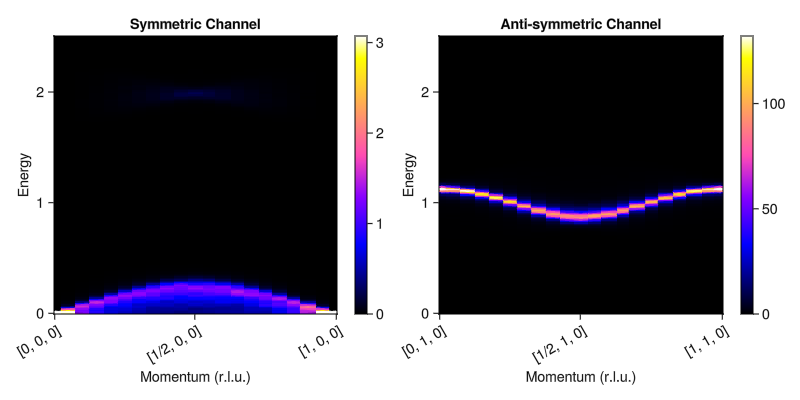
Note that the classical dynamics reproduces the same dispersion as spin wave theory. We can now easily examine the behavior of the system at much higher temperatures where the classical theory can be expected to be even more accurate.
sc = SampledCorrelations(esys; energies, dt, measure=ssf_trace(esys))
integrator.kT = 20.0J
for _ in 1:500
step!(esys, integrator)
end
for _ in 1:100
for _ in 1:300
step!(esys, integrator)
end
add_sample!(sc, esys)
end
res_0 = intensities(sc, qs_0; energies=:available, kT)
res_π = intensities(sc, qs_π; energies=:available, kT)
fig = Figure(size=(800, 400))
plot_intensities!(fig[1,1], res_0; axisopts=(; title="Symmetric Channel"))
plot_intensities!(fig[1,2], res_π; axisopts=(; title="Anti-symmetric Channel"))
fig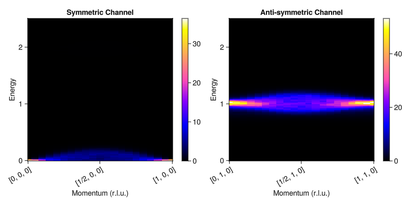
A pseudogap persists even well above the ordering temperature, in agreement with exact solutions. This is in contrast with traditional Landau-Lifshitz dynamics, which remains gapless throughout all temperatures.
For a more complete study of this model, see D. Dahlbom et al., PRB 110 (2024).
Material Example: Ba₃Mn₂O₈
As a more realistic example, this section briefly demonstrates how to reproduce the zero-field dispersion of Ba₃Mn₂O₈. This material consists of triangular lattice of $S=1$ bilayers in an ABC stacking.
First load the crystal and extract the magnetic subcrystal.
crystal_full = Crystal(joinpath(@__DIR__, "Ba3Mn2O8.cif"); symprec=0.01)
crystal = subcrystal(crystal_full, "Mn1")
view_crystal(crystal)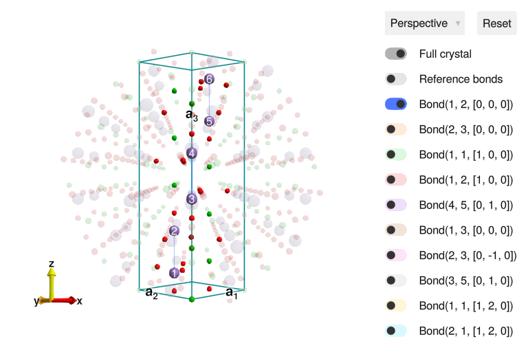
Each site hosts a single $S=1$ spin subject to an easy-axis anisotropy. The spins interact with each other antiferromagnetically through a number of Heisenberg exchange interactions.
sys = System(crystal, [1 => Moment(s=1, g=2)], :SUN)
J0 = 1.642
J1 = 0.118
J2 = 0.256
J3 = 0.142
J4 = 0.037
set_exchange!(sys, J0, Bond(1, 2, [0, 0, 0]))
set_exchange!(sys, J1, Bond(2, 3, [0, 0, 0]))
set_exchange!(sys, J2, Bond(1, 1, [1, 0, 0]))
set_exchange!(sys, J3, Bond(1, 2, [1, 0, 0]))
set_exchange!(sys, J4, Bond(4, 5, [0, 1, 0]))
D = -0.032
set_onsite_coupling!(sys, S -> D*S[3]^2, 1);The strong antiferromagnetic exchange on the 1 -> 2, 3 -> 4 and 5 -> 6 bonds results in dimerization and a ground state that is a product of singlets. This physics can be capture by treating each dimer as a single entangled unit.
dimers = [(1, 2), (3, 4), (5, 6)]
esys = Sunny.EntangledSystem(sys, dimers)EntangledSystem [SU(9)]
Supercell (1×1×1)×6
Energy per site 4431/1000
Examine the ground state.
randomize_spins!(esys)
minimize_energy!(esys)
plot_spins(esys)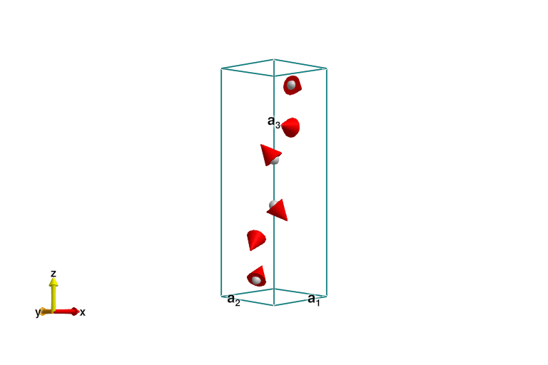
Observe that there is effectively no magnetic moment, up to numerical roundoff. This ground state can then be used to perform a spin wave calculation.
formfactors = [1 => FormFactor("Mn5")]
measure = ssf_perp(esys; formfactors)
swt = SpinWaveTheory(esys; measure)
fwhm = 0.295
points = [
[0.175, 0.175, 1.5],
[0.85, 0.85, 1.5],
[0.85, 0.85, 3],
[0.0, 0.0, 3],
[0.0, 0.0, 8],
]
qpts = q_space_path(crystal, points, 400)
energies = range(0.0, 4.0, 400)
res = intensities(swt, qpts; energies, kernel=gaussian(; fwhm))
plot_intensities(res)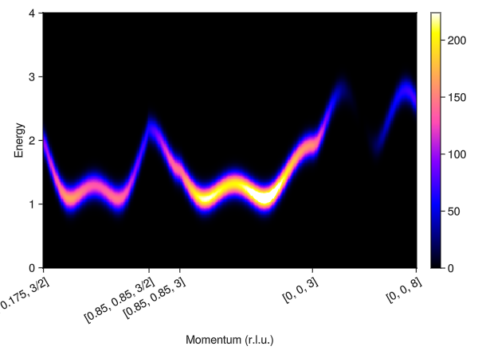
Compare the resulting dispersion and intensities with the scattering data reported in Stone et al., PRL 100 (2008).